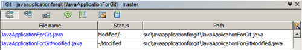
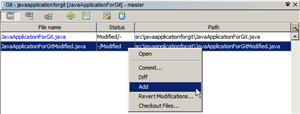

在 NetBeans IDE 中使用 Git 支持
NetBeans IDE 为 Git 版本控制客户端提供支持。通过利用 IDE 的 Git 支持，您可以从 IDE 内的项目中直接执行版本控制任务。本文档通过指导您完成使用版本控制软件的标准工作流，介绍了如何在 IDE 中执行基本的版本控制任务。
Git 是一个免费的开源分布式版本控制系统，旨在快速高效地处理各种或大或小的项目。每个 Git
克隆都是一个功能完备的资源库，并具有完整的历史记录和完善的修订版本跟踪功能，不依赖于网络访问或中心服务器。可以快速方便地完成分支和合并。Git
用于文件版本控制，与 Mercurial、Subversion、CVS、Perforce 等工具非常类似。
目录
要学完本教程，您需要具备以下软件和资源。
初始化 Git 资源库
要通过尚未在源代码控制中的现有文件初始化 Git 资源库，您需要完成以下步骤：
在 "Projects"（项目）窗口中，选择一个未进行版本控制的项目，然后右键单击项目名称。
在上下文菜单中，选择 Versioning （版本控制）> Initialize Git Repository （初始化 Git 资源库）；或者，在主菜单中，选择 Team （团队开发）> Git > Initialize （初始化）。
在 Initialize a Git Repository （初始化 Git 资源库）对话框中，指定将存储版本控制文件的资源库路径，或者单击 "Browse"（浏览）以浏览到所需的目录。
单击 "OK"（确定）。
此时，将在前面第 3 步指定的文件夹（默认情况下是您的 NetBeans 项目文件夹）中创建 .git 子文件夹，这是存储所有项目快照数据的 Git 资源库。Git 开始对您所指定的文件夹中的所有文件进行版本控制。Window （窗口）> Output （输出）> Output （输出）查看 IDE 报告，了解本地工作目录下的资源库创建进度。
所有项目文件在工作树中都标记为 Added （已添加）。要查看文件状态 ，请在 "Projects"（项目）窗口中将光标放在文件名上。工作树中的文件状态以绿色显示在斜杠右侧，如下图所示。
在初始化 Git 资源库后，您可以添加 文件，也可以直接将文件提交 到 Git 资源库。
复制 Git 资源库
要获取已存在的 Git 资源库的副本，您需要对其进行克隆。确保您知道 Git 资源库 URL，然后再在 IDE 中启动克隆资源库向导。
从主菜单中选择 Team （团队开发）> Git > Clone （克隆）。显示克隆资源库向导。
在 "Repository"（资源库）页，指定 Git 资源库位置路径、用户名和口令（可以将其保存，供日后需要时使用）。
（可选）单击 "Proxy Configuration"（代理配置）以显示 "Options"（选项）对话框，然后设置代理服务器设置。完成后，单击 "OK"（确定）。
单击 "Next"（下一步）以切换到该向导的下一个步骤。
在 "Remote Branches"（远程分支）页中，选择要获取（下载）到本地资源库的资源库分支。单击 "Next"（下一步）。
在 "Destination Directory"（目标目录）页上，请指定以下内容：
在 "Parent Directory"（父目录）字段中，指定用于硬盘驱动器上克隆资源库的目录路径（或者，单击 "Browse"（浏览）按钮，导航至该目录）。NetBeansProjects 目录路径进行预填充。
在 "Clone Name"（克隆名称）字段中，指定要向其克隆原始项目的本地文件夹的名称。
在 "Checkout Branch"（检出分支）字段中，选择要检出到工作树中的分支。
在 "Remote Name"（远程名称）字段中，指定一个名称来表示要克隆的原始资源库。origin 是要克隆的资源库的默认别名。它是建议值。
使 "Scan for NetBeans Projects after Clone"（克隆后扫描 NetBeans 项目）复选框处于选中状态，以便克隆完成后立即激活后扫描操作。（插件将在克隆资源中搜索 NetBeans 项目，并可打开找到的项目。）
单击 "Finish"（完成）。.git 文件夹。
通过 SSH 协议从 GitHub 复制资源库
要通过 SSH 协议从 GitHub 克隆资源库，请继续执行以下操作：
注： 您需要拥有 GitHub 帐户并成为项目成员，才能通过 SSH 进行克隆。
从主菜单中选择 Team （团队开发）> Git > Clone （克隆）。显示克隆资源库向导。
在克隆资源库向导的 "Remote Repository"（远程资源库）页，指定 "Repository URL"（资源库 URL）字段中所需的资源库路径，例如 git@github.com
git
@
github.com
:tstupka/koliba.git 。
验证是否在 "Username"（用户名）文本字段中指定了 git 。
选中 "Private/Public Key"（私有密钥/公共密钥）选项。
（使用 SSH-agent 或 Pageant 对 Git 服务器进行自动化 SSH 访问时跳过。 ）完成以下步骤以使用 SSH 私有密钥和密码短语访问 Git 服务器：
指定密钥文件路径，例如 C:\Users\key 。
注： 需要采用 OpenSSH 私有密钥格式。必须先将 PuTTYgen for Microsoft Windows 生成的密钥转换为 OpenSSH 格式，然后才能在 IDE 中使用它们。
输入密钥文件的密码短语，例如 abcd 。
（可选）选中 "Save Passphrase"（保存密码短语）选项（如有必要）。
（使用 SSH-agent 或 Pageant 对 Git 服务器进行自动化 SSH 访问时适用。 ）将 "Private Key File"（私有密钥文件）和 "Passphrase"（密码短语）字段留空可通过正确配置的 SSH-agent 或 Pageant 获取从 IDE 到 Git 服务器的经过验证的访问。
（可选）单击 "Proxy Configuration"（代理配置）以显示 "Options"（选项）对话框，然后设置代理服务器设置。完成后，单击 "OK"（确定）。
单击 "Next"（下一步）。
在 "Remote Branches"（远程分支）页，选择要获取（下载）到本地资源库的资源库分支，例如 master 。
单击 "Next"（下一步）。
在 "Destination Directory"（目标目录）页上，请指定以下内容：
在 "Parent Directory"（父目录）字段中，指定用于硬盘驱动器上克隆资源库的目录路径（或者，单击 "Browse"（浏览）按钮，导航至该目录）。NetBeansProjects 目录路径进行预填充。
在 "Clone Name"（克隆名称）字段中，指定要向其克隆原始项目的本地文件夹的名称。
在 "Checkout Branch"（检出分支）字段中，选择要检出到工作树中的分支。
在 "Remote Name"（远程名称）字段中，指定一个名称来表示要克隆的原始资源库。origin 是要克隆的资源库的默认别名。它是建议值。
使 "Scan for NetBeans Projects after Clone"（克隆后扫描 NetBeans 项目）复选框处于选中状态，以便克隆完成后立即激活后扫描操作。（插件将在克隆资源中搜索 NetBeans 项目，并可打开找到的项目。）
单击 "Finish"（完成）。
选择所需的选项。
将文件添加到 Git 资源库中
要开始跟踪新文件以及在 Git 资源库中缓存对已跟踪文件的更改，您需要将该文件添加到资源库中。
将文件添加到 Git 资源库中时，IDE 先在索引中创建并保存项目的快照。执行提交后，IDE 在 HEAD 中保存这些快照。IDE 允许您选择下表中描述的两个工作流之一。
明确在索引中添加新文件或修改的文件，然后仅将索引中缓存的文件提交到 HEAD
跳过在索引中添加新文件或修改的文件，直接将所需的文件提交到 HEAD
在 "Projects"（项目）窗口中，右键单击要添加的文件。
在上下文菜单中，选择 Git > Add （添加）。
在 "Projects"（项目）窗口中，右键单击要提交的文件。
在 "Commit"（提交）对话框中，选择 "Changes between HEAD and Index"（HEAD 和索引之间的更改）() 开启/关闭按钮。
按下面的将源文件提交到资源库 部分所述，提交这些文件。
在 "Projects"（项目）窗口中，右键单击要提交的文件。
在上下文菜单中，选择 Git > Commit （提交）。
在 "Commit"（提交）对话框中，选择 "Changes between Index and Working Tree"（索引和工作树之间的更改）() 开启/关闭按钮。
按下面的将源文件提交到资源库 部分所述，提交这些文件。
注： HEAD 中的文件状态 以绿色显示在斜杠左侧，如下图所示。
考虑到 NetBeans IDE 的平面文件夹内容结构，如果某个操作是针对文件夹调用的，该操作将递归进行。
编辑文件
在 IDE 中打开 Git 版本控制项目后，您可以开始对源文件进行更改。与 NetBeans IDE
中打开的任何项目一样，在 IDE 窗口（例如“项目”（Ctrl-1 组合键）、“文件”（Ctrl-2 组合键）或“收藏夹”（Ctrl-3
组合键）窗口）中显示文件时，您可以双击文件节点，在源代码编辑器中打开文件。
在 IDE 中处理源文件时，您可以使用各种不同的 UI 组件，这可帮助查看和运行版本控制命令：
在源代码编辑器中查看更改
如果在 IDE 的源代码编辑器中打开一个版本控制文件，您可以在针对 Git 资源库中的基本版本修改文件的同时实时查看文件更改。在您工作时，IDE 将在源代码编辑器的旁注中使用颜色编码传达以下信息：
蓝色 ( )表示自早期修订版本以来更改的行。
绿色 ( )表示自早期修订版本以来添加的行。
红色 ( )表示自早期修订版本以来删除的行。
源代码编辑器左旁注逐行显示发生的更改。当修改给定行时，所做更改会立即在左旁注中显示出来。
注： 您可以单击旁注中的颜色组以调用版本控制命令。例如，下图显示了在单击红色图标时可用的窗口部件，该图标表示从本地副本中删除了行：
源代码编辑器右旁注提供了对文件所做的更改的整体视图，从上到下显示。在对文件进行更改后，将会立即生成颜色编码。
注： 您可以单击旁注中的特定位置，立即将内联光标放在文件中的该位置。想要查看受影响行的行号，可以将鼠标放在右旁注中的彩色图标上：
查看文件状态信息
在使用 "Projects"（项目）（Ctrl-1 组合键）、"Files"（文件）（Ctrl-2
组合键）、"Favorites"（收藏夹）（Ctrl-3 组合键）或 "Versioning"（版本控制）视图时，IDE
将提供一些可视化功能以帮助查看文件状态信息。在下面的示例中，请注意标记（例如，
标记、颜色编码、文件状态标签和 Git 比较查看器（或许是最重要的）都有助于在 IDE 中有效地查看和管理版本控制信息。
标记和颜色编码
标记应用于项目、文件夹、包节点，通知您包含在该节点中的文件状态：
下表显示了用于标记的颜色方案：
蓝色标记 (指示工作树中存在已修改、添加或删除的文件。对于包，此标记仅应用于包本身，而不应用于它的子包。对于项目或文件夹，此标记指示其中的更改，或指示其所包含子文件夹中的任何更改。
红色标记 (标记包含冲突 文件的项目、文件夹或包。对于包，此标记仅应用于包本身，而不应用于它的子包。对于项目或文件夹，此标记指示其中的冲突，或指示其所包含子文件夹中的任何冲突。
颜色编码应用于文件名，以指示它们相对于资源库的当前状态：
没有特定颜色（黑色） 表示未更改文件。
蓝色 表示在本地修改了文件。
绿色 表示在本地添加了文件。
红色 表示文件存在合并冲突。
灰色 表示文件被 Git 忽略，并且不包含在版本控制命令（例如 "Update"（更新）和 "Commit"（提交））中。如果文件已进行版本控制，则无法被忽略。
文件状态标签
IDE 显示了两个文件状态值：
描述文件工作树和索引状态之间差异的状态，
描述文件索引状态和当前 HEAD 提交之间差异的状态。
文件状态标签以文本的形式指示 IDE 窗口中的版本控制文件的状态：
- 未修改
A 已添加
U 已更新但未合并
M 修改
D 已删除
I 已忽略
R 已重命名
默认情况下，IDE 在窗口中列出的文件右侧以灰色文本显示状态（新的、已修改或已忽略等）和文件夹信息。
如果文件存在合并冲突，在通过明确操作解决该合并冲突之前，这些文件处于未合并状态（通常用红色标注）。未合并文件的状态标签视情况而定（例如，A/A - 未合并但均已添加）。
从主菜单中选择 View （视图）> Show Versioning Labels （显示版本控制标签），可打开和关闭文件状态标签。
Git 的 "Versioning"（版本控制）视图
Git 的 "Versioning"（版本控制）视图为您提供了一个实时列表，其中包括对本地工作树的选定文件夹中的文件进行的所有更改。默认情况下，它将在 IDE 的底部面板中打开，其中列出了已添加、删除或修改的文件。
要打开 "Versioning"（版本控制）视图，请选择一个版本控制文件或文件夹（例如，从 "Projects"（项目）、"Files"（文件）或 "Favorites"（收藏夹）窗口中），然后从右键单击菜单中选择 Git > Show Changes （显示更改），或者从主菜单中选择 Team （团队开发）> Show Changes （显示更改）。下面的窗口出现在 IDE 底部：

默认情况下，"Versioning"（版本控制）视图显示工作树中选定包或文件夹内所有已修改文件的列表。通过
使用工具栏中的按钮，您可以选择显示在索引和 HEAD 之间、工作树和索引之间或工作树和 HEAD
之间存在差异的文件列表。此外，也可以单击列出的文件上面的列标题，按名称、状态或位置对这些文件进行排序。
"Versioning"（版本控制）视图工具栏还包含一些按钮，可用于对列表中显示的所有文件调用最常见 Git 任务。下表列出了 "Versioning"（版本控制）视图工具栏中提供的 Git 命令：
HEAD 和工作树之间的更改 显示已缓存或只修改/创建而未缓存的文件列表。
HEAD 和索引之间的更改 显示缓存的文件列表。
索引和工作树之间的更改 显示在已缓存和工作树状态之间存在差异的文件。
刷新状态 刷新选定文件和文件夹的状态。可以刷新 "Versioning"（版本控制）视图中显示的文件以反映可能在外部进行的任何更改。
打开比较 打开比较查看器，您可以用它对本地副本和资源库中保留的版本进行并排比较。
还原修改 显示还原修改 对话框。
提交更改 显示提交 对话框。
您可以在 "Versioning"（版本控制）视图中访问其他 Git 命令，方法是选择与修改的文件对应的表行，然后从右键单击菜单中选择一个命令：

比较文件版本
使用版本化项目时，比较文件版本是一种常见任务。IDE 允许您使用比较命令比较修订版本：
注： IDE 中提供了“与 HEAD 比较”、“与跟踪内容进行比较”和“比较”这几种比较模式。
选择一个版本控制文件或文件夹（例如，从 Projects （项目）、Files （文件）或 Favorites （收藏夹）窗口中选择一个）。
从主菜单中选择 Team （团队开发）> Diff （比较）> Diff to HEAD （与 HEAD 比较）。
比较查看器使用颜色编码 显示版本控制更改，该颜色编码与其他地方使用的颜色编码相同。在上面显示的屏幕快照中，绿色块指示已添加到较新修订版本中的内容。红色块指示从较新修订版本中删除了以前的修订内容。蓝色指示在突出显示的行中发的更改。
注： 可从 "Diff Viewer"（比较查看器）工具栏下方的 Diff （比较）和 to （比较对象）下拉列表中选择其他修订版本。
比较查看器工具栏还包含一些用于对列表中显示的所有文件调用最常见 Git 任务的按钮。下表列出了比较查看器工具栏中提供的 Git 命令：
HEAD 和工作树之间的更改 显示已缓存或只修改/创建而未缓存的文件列表。
HEAD 和索引之间的更改 显示缓存的文件列表。
索引和工作树之间的更改 显示在已缓存和工作树状态之间存在差异的文件。
转至下一个差异 显示文件中的下一个差异。
转至上一个差异 显示文件中的上一个差异。
刷新状态 刷新选定文件和文件夹的状态。可以刷新 "Versioning"（版本控制）窗口中显示的文件，以反映可能已在外部执行的任何更改。
还原修改 显示 Revert Modifications （还原修改）对话框。
提交更改 显示 Commit （提交）对话框。
如果要对工作树中的本地副本进行比较，IDE 允许您从比较查看器中直接进行更改。为此，可以将光标放在比较查看器的右侧窗格中，并且相应地修改文件，也可以每个突出显示的更改旁边的内联图标：
替换 将突出显示的文本插入到工作树副本中。
全部移动 还原整个本地工作树副本。
删除 从本地工作树副本中删除突出显示的文本。
还原更改
放弃对工作树中的选定文件进行的本地更改并将这些文件替换为索引或 HEAD 中的文件：
选择一个版本控制文件或文件夹（例如，从 Projects （项目）、Files （文件）或 Favorites （收藏夹）窗口中选择一个）。
从主菜单中选择 Team （团队开发）> Revert Modifications （还原修改）。Revert Modifications （还原修改）对话框。
Revert only Uncommitted Changes in Index to HEAD （仅将索引中的未提交更改还原为 HEAD））。 单击 "Revert"（还原）。
IDE 将使用上面的步骤 3 中指定的文件替换选定的文件。
将源文件提交到资源库
将文件提交到 Git 资源库：
在 Projects （项目）窗口中，右键单击要提交的文件。
在上下文菜单中，选择 Git > Commit （提交）。
Commit （提交）对话框。
Commit （提交）对话框包含以下组件：
Commit Message （提交消息）文本区域，用于描述要提交的更改Author （作者）和 Commiter （提交者）下拉列表，用于在必要时区分更改文件的人员和实际提交文件的人员。Files to Commit （要提交的文件）部分，列出以下内容：
注： 要在此处指定是否从提交中排除个别文件，请取消选中名为 Commit （提交）的第一列中的复选框，或者在 Commit Action （提交操作）列中右键单击一个文件行，然后从弹出式菜单中选择 Exclude from Commit （从提交中排除）。要在此处显示比较查看器，请在 Commit Action （提交操作）列中右键单击一个文件行，然后从弹出式菜单中选择 Diff （比较）。
Update Issue （更新问题）部分，用于跟踪与要提交的更改有关的问题。
注 ：您需要安装 JIRA 或 Subversion 插件才能开始在 IDE 中跟踪问题。
在 Commit Message （提交消息）文本区域中键入提交消息。此外，也可以执行以下任一操作：
单击右上角的 Recent Messages （近期的消息）() 图标，以便在以前使用过的消息列表中进行查看和选择。
单击右上角的 Load Template （加载模板）(
指定各个文件的操作后，单击 Commit （提交）。Projects （项目）、Files （文件）或 Favorites （收藏夹）窗口中的版本控制标记将会消失，并且已提交文件的颜色编码重新变为黑色。
使用分支
借助于 IDE 的 Git 支持，您可以使用分支来维护整个代码库的不同版本。
在 IDE 中使用分支时，以下操作是受支持的：
创建分支
如果要出于稳定性或试验目的使用单独的文件系统版本而不改变主要主干，请完成下列步骤以创建本地分支：
在 "Projects"（项目）或 "Files"（文件）窗口中，从要在其中创建分支的资源库中选择项目或文件夹。
在主菜单中，选择 "Team"（团队开发）> "Branch/Tag"（分支/标记）> "Create Branch"（创建分支）。
注： 也可以右键单击版本控制项目或文件夹，然后在弹出菜单中选择 "Git" > "Branch/Tag"（分支/标记）> "Create Branch"（创建分支）。
此时将显示 "Create Branch"（创建分支）对话框。
在 "Branch Name"（分支名称）字段中，输入要创建的分支的名称。
在 "Revision"（修订版本）字段中输入提交 ID、现有分支或标记名称，即可键入选定项的特定修订版本，也可以按 "Select"（选择）来查看在资源库中维护的修订版本列表。
（可选）在 "Select Revision"（选择修订版本）对话框中，展开 "Branches"（分支），选择所需的分支，并在相邻列表中指定提交 ID，然后按 "Select"（选择）。
检查要分支的修订版本的特定 "Commit ID"（提交 ID）、"Author"（作者）和 "Message"（消息）字段信息，然后单击 "Create"（创建）。Branches/Local 文件夹中。
检出
如果需要编辑已存在的分支中的文件，可以检出该分支，以将这些文件复制到工作树中。
要检出修订版本，请执行以下操作：
从主菜单中选择 "Team"（团队开发）> "Checkout"（检出）> "Checkout Revision"（检出修订版本）。
在 "Revision"（修订版本）字段中输入提交 ID、现有分支或标记名称，即可指定所需的修订版本，也可以按 "Select"（选择）来查看在资源库中维护的修订版本列表。
如果您未在上一步中按 "Select"（选择）则跳过。在 "Select Revision"（选择修订版本）对话框中，展开 "Branches"（分支），选择所需的分支，并根据需要在相邻列表中指定提交 ID，然后按 "Select"（选择）。
注： 如果指定的修订版本引用了未使用分支名称标记的有效提交，则 HEAD 将断开连接，而您将不再位于任何分支上。
检查特定于要检出的修订版本的 "Commit ID"（提交 ID）、"Author"（作者）和 "Message"（消息）字段信息。
要在已检出修订版本之外创建新分支，请选择 "Checkout as New Branch"（检出为新分支）选项，然后在 "Branch Name"（分支名称）字段中输入相应名称。
按 "Checkout"（检出）以检出修订版本。
注： 如果要将文件切换到已存在的分支（例如切换到不位于其中一个分支顶部的提交），则可以使用
"Team"（团队开发）> "Git" > "Branch"（分支）> "Switch To
Branch"（切换到分支）命令，在 "Switch to Selected
Branch"（切换到选定的分支）对话框中指定分支，并将其检出为新分支（可选），然后按 "Switch"（切换）。
IDE 支持当前在 IDE 中选择的文件、文件夹或项目的上下文相关检出。要从索引中检出某些文件（不是分支），请完成以下步骤：
从主菜单中选择 "Team"（团队开发）> "Checkout"（检出）> "Checkout Files"（检出文件）。
选中 "Update Index with Entries from the Selected Revision"（使用选定修订版本中的条目更新索引）选项。
在 "Revision"（修订版本）字段中输入提交 ID、现有分支或标记名称，即可指定所需的修订版本，也可以按 "Select"（选择）来查看在资源库中维护的修订版本列表。
如果您未在上一步中按 "Select"（选择）则跳过。在 "Select Revision"（选择修订版本）对话框中，展开 "Branches"（分支），选择所需的分支，并根据需要在相邻列表中指定修订版本号，然后按 "Select"（选择）。
按 "Checkout"（检出）以完成检出。
合并
要将修改内容从资源库修订版本移到工作树 中，请按以下方式执行操作：
从主菜单中选择 "Team"（团队开发）> "Branch/Tag"（分支/标记）> "Merge Revision"（合并修订版本）。
在 "Revision"（修订版本）字段中输入提交 ID、现有分支或标记名称，即可指定所需的修订版本，也可以按 "Select"（选择）来查看在资源库中维护的修订版本列表。
如果您未在上一步中按 "Select"（选择）则跳过。在 "Select Revision"（选择修订版本）对话框中，展开 "Branches"（分支），选择所需的分支，并根据需要在相邻列表中指定提交 ID，然后按 "Select"（选择）。
按 "Merge"（合并）。注： 如果发生合并冲突，则使用红色标记 标记冲突文件，以说明这种情况。
注： 合并之后，还必须提交 更改，以便将其添加到 HEAD 中。
删除分支
要删除不必要的本地分支，请完成以下步骤：
从主菜单中选择“团队开发”>“资源库浏览器”。
在 Git 资源库浏览器中，选择要删除的分支。注： 分支必须处于非活动状态，即当前未检出到工作树中。
右键单击选定的分支，然后从弹出式菜单中选择“删除分支”。
在“删除分支”对话框中，按“确定”以确认删除分支。
使用远程资源库
与其他开发者一起工作时，您需要共享工作，其中涉及从 Internet 或网络上托管的远程资源库获取、推入和提取数据或将数据获取、推入和提取到这些远程资源库中。
获取
获取时会从原始远程资源库中获得尚未拥有的更改。它绝不会更改任何本地分支。获取时会从远程资源库中获得所有分支，您可以将这些分支合并到现有分支中，也可以随时检查它们。
要获取更新，请执行以下操作：
选择 "Team"（团队开发）> "Remote"（远程）> "Fetch"（获取）。
在该向导的 "Remote Repository"（远程资源库）页，选择 "Configured
repository"（已配置的资源库）（以使用先前配置的资源库路径）或 "Specify Git Repository
Location"（指定 Git 资源库位置）选项（以根据需要定义尚未访问的远程资源库路径及其名称、登录信息、口令和代理配置），然后单击
"Next"（下一步）。
在该向导的 "Remote Branches"（远程分支）页，选择要从中获取更改的分支，然后单击 "Finish"（完成）。Branches （分支）> Remote （远程）目录中更新选定分支。
提取
从远程 Git 资源库中提取某些更新时，将从中获取更改，并将其合并到本地资源库的当前 HEAD 中。
选择 "Team"（团队开发）> "Remote"（远程）> "Pull"（提取）。
在该向导的 "Remote Repository"（远程资源库）页，选择 "Configured
repository"（已配置的资源库）（以使用先前配置的资源库路径）或 "Specify Git Repository
Location"（指定 Git 资源库位置）选项（以根据需要定义尚未访问的远程资源库路径及其名称、登录信息和口令），然后单击
"Next"（下一步）。
在该向导的 "Remote Branches"（远程分支）页，选择要从中提取更改的分支，然后单击 "Finish"（完成）。
推入
要将更改从本地 Git 资源库提供到公共 Git 资源库中，请执行以下步骤：
选择 "Team"（团队开发）> "Remote"（远程）> "Push"（推入）。
在该向导的 "Remote Repository"（远程资源库）页，选择 "Configured
repository"（已配置的资源库）（以使用先前配置的资源库路径）或 "Specify Git Repository
Location"（指定 Git 资源库位置）选项（以根据需要定义尚未访问的远程资源库路径及其名称、登录信息和口令），然后单击
"Next"（下一步）。
在 "Select Local Branches"（选择本地分支）页，选择要向其推入编辑内容的分支，然后单击 "Next"（下一步）。
在 "Update Local References"（更新本地引用）页，选择要在本地资源库的 "Remotes"（远程）目录中更新的分支，然后单击 "Finish"（完成）。
小结
本教程通过指导您完成使用 IDE 的 GIT 支持的标准工作流，介绍了如何在 IDE 中执行基本的版本控制任务。它还介绍了如何设置版本控制项目和对版本控制文件执行基本任务，同时简要说明了 IDE 中包含的一些 GIT 特定的功能。
另请参见
相关资料请参见以下文档：


 ) 图标，以便选择消息模板。
) 图标，以便选择消息模板。


{kind=link}
{kind=link}
{kind=link}
{kind=link}
{kind=link}
{kind=link}
{kind=link}
{kind=link}